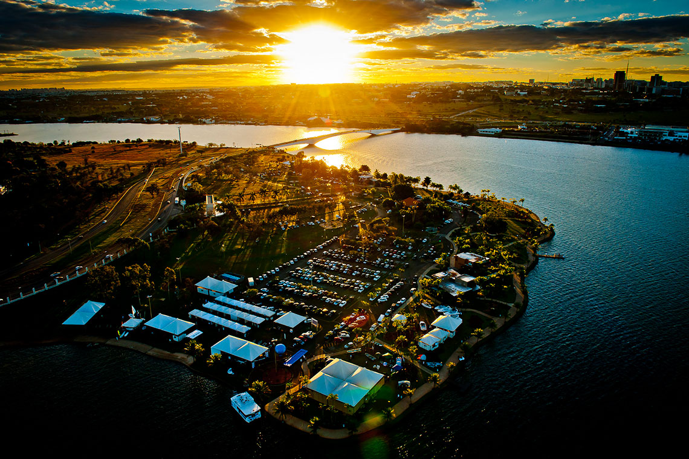

Descubra Brasília
“Um destino que une cultura, história e natureza”
Brasília, a capital do Brasil, é uma cidade planejada que encanta visitantes com sua arquitetura moderna e vibrante vida cultural. Fundada em 1960, a cidade é conhecida por seus edifícios icônicos projetados por Oscar Niemeyer e pelo urbanismo de Lúcio Costa. Entre os pontos turísticos imperdíveis estão a Catedral Metropolitana, o Congresso Nacional, o Palácio da Alvorada e o Lago Paranoá, que oferece diversas opções de lazer ao ar livre. Além disso, Brasília abriga museus, teatros e uma rica cena gastronômica que reflete a diversidade cultural do país. Seja para explorar sua história ou desfrutar de suas belezas naturais, Brasília é um destino que promete experiências inesquecíveis.
Pontos Turísticos Principais
Maior centro gastronômico de Brasília
O Pontão do Lago Sul é uma área à beira do Lago Paranoá, voltada para lazer, esportes e turismo. É um dos locais mais procurados pelos moradores e visitantes de Brasília para passeios ao ar livre.
O Pontão do Lago Sul oferece uma variedade de restaurantes, bares e quiosques, que servem desde pratos brasileiros tradicionais até culinária internacional. É um local perfeito para passeios em família, encontros românticos ou simplesmente apreciar a paisagem do lago.